Code
n <- 13
r <- 0.7283
z.transform <- 0.5 * log((1 + r) / (1 - r))
clz <- z.transform + c(-1, 1) * qnorm(0.975) / sqrt(n - 3)
clr <- (exp(2 * clz) - 1) / (exp(2 * clz) + 1)
round(c(z.transform, clz, clr), 4)[1] 0.9251 0.3053 1.5449 0.2962 0.9129

| Outcome | Predictor | Normality? | Linearity? | Analysis Method |
|---|---|---|---|---|
| Interval | Binary | Yes | 2-sample \(t\)-test or linear regression | |
| Ordinal | Binary | No | Wilcoxon 2-sample test or proportional odds model | |
| Categorical | Categorical | Pearson \(\chi^2\) test | ||
| Interval | Interval | Yes | Yes | Correlation or linear regression |
| Ordinal | Ordinal | No | No | Spearman’s rank correlation |
\(r = \frac{\Sigma(x_i - \bar{x})(y_i - \bar{y})}{\sqrt{\Sigma(x_i - \bar{x})^2\Sigma(y_i - \bar{y})^2}}\)
Range: \(-1 \leq r \leq 1\)
Correlation coefficient is a unitless index of strength of association between two variables (+ = positive association, - = negative, 0 = no association)
Measures the linear relationship between \(X\) and \(Y\)
Can test for significant association by testing whether the population correlation is zero \[t = \frac{r\sqrt{n-2}}{\sqrt{1-r^{2}}}\] which is identical to the \(t\)-test used to test whether the population \(r\) is zero; d.f.=\(n-2\).
Use probability calculator for \(t\) distribution to get \(P\)-value (2-tailed if interested in association in either direction)
1-tailed test for a positive correlation between \(X\) and \(Y\) tests \(H_{0}:\) when \(X \uparrow\) does \(Y \uparrow\) in the population?
Confidence intervals for population \(r\) calculated using Fisher’s \(Z\) transformation \[Z = \frac{1}{2} \mathrm{log}_\mathrm{e} \left( \frac{1+r}{1-r} \right)\]
Example (Altman 89-90): Pearson’s \(r\) for a study investigating the association of basal metabolic rate with total energy expenditure was calculated to be \(0.7283\) in a study of \(13\) women. Derive a 0.95 confidence interval for \(r\). \[ Z = \frac{1}{2} \mathrm{log}_\mathrm{e} \left( \frac{1+0.7283}{1-0.7283} \right) = 0.9251 \]
The lower limit of a 0.95 CI for \(Z\) is given by \[ 0.9251 - 1.96 \times \frac{1}{\sqrt{13-3}} = 0.3053 \] and the upper limit is \[ 0.9251 + 1.96 \times \frac{1}{\sqrt{13-3}} = 1.545 \] A 0.95 CI for the population correlation coefficient is given by transforming these limits from the \(Z\) scale back to the \(r\) scale \[ \frac{\mathrm{exp}(2\times 0.3053) - 1}{\mathrm{exp}(2\times 0.3053) + 1} ~~~ \mathrm{to} ~~~ \frac{\mathrm{exp}(2\times 1.545) - 1}{\mathrm{exp}(2\times 1.545) + 1} \] Which gives a 0.95 CI from 0.30 to 0.91 for the population correlation
n <- 13
r <- 0.7283
z.transform <- 0.5 * log((1 + r) / (1 - r))
clz <- z.transform + c(-1, 1) * qnorm(0.975) / sqrt(n - 3)
clr <- (exp(2 * clz) - 1) / (exp(2 * clz) + 1)
round(c(z.transform, clz, clr), 4)[1] 0.9251 0.3053 1.5449 0.2962 0.9129Pearson’s \(r\) assumes linear relationship between \(X\) and \(Y\)
Spearman’s \(\rho\) (sometimes labeled \(r_{s}\)) assumes monotonic relationship between \(X\) and \(Y\)
\(\rho = r\) once replace column of \(X\)s by their ranks and column of \(Y\)s by ranks
To test \(H_{0}:\rho=0\) without assuming linearity or normality, being damaged by outliers, or sacrificing much power (even if data are normal), use a \(t\) statistic: \[t = \frac{\rho\sqrt{n-2}}{\sqrt{1-\rho^{2}}}\] which is identical to the \(t\)-test used to test whether the population \(r\) is zero; d.f.=\(n-2\).
Use probability calculator for \(t\) distribution to get \(P\)-value (2-tailed if interested in association in either direction)
1-tailed test for a positive correlation between \(X\) and \(Y\) tests \(H_{0}:\) when \(X \uparrow\) does \(Y \uparrow\) in the population?
# Generate 50 data points with Population correlations of 0, .2, .4, .6,
# .8, and .9 and plot results
require(ggplot2)
n <- 50
set.seed(123)
x <- rnorm(n, 5, 1)
d <- expand.grid(x=x, R=c(0, .2, .4, .6, .8, .9))
d <- transform(d, y = x + rnorm(nrow(d), 0,
ifelse(R == 0, 5, sqrt(R ^ -2 - 1))))
sfun <- function(i) {
x <- d$x[i]; y <- d$y[i]; R <- d$R[i][1]
r <- cor(x, y)
tr <- r * sqrt(n - 2) / sqrt(1 - r^2)
rho <- cor(rank(x), rank(y))
trho <- rho * sqrt(n - 2) / sqrt(1 - rho^2)
label <- paste('True r:', R[1], ' r:', round(r,2), ' t:', round(tr,2),
' rho:', round(rho,2), ' t:', round(trho,2), sep='')
names(label) <- R
label
}
stats <- tapply(1 : nrow(d), d$R, sfun)
d$stats <- factor(stats[as.character(d$R)], unique(stats))
ggplot(d, aes(x=x, y=y)) + geom_point() + facet_wrap(~ stats) +
theme(strip.text.x = element_text(size=7))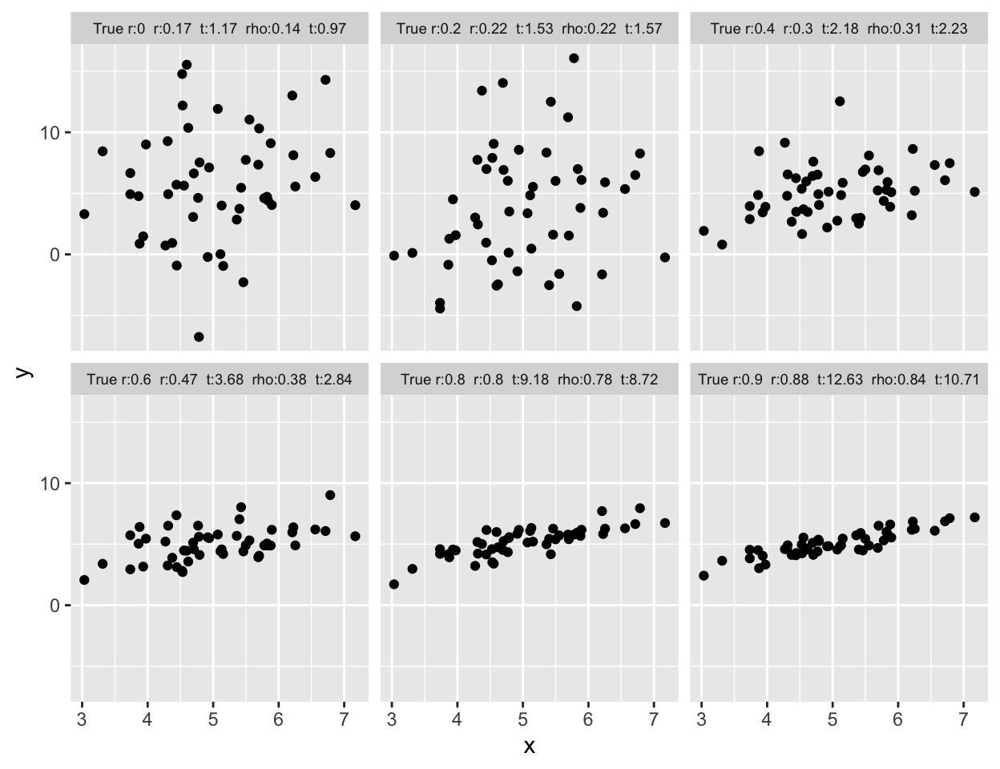
# Different scenarios that can lead to a correlation of 0.7
spar(mfrow=c(3,2))
set.seed(123)
rho <- 0.7; n <- 50
var.eps <- rho^-2 - 1
x <- rnorm(n, 5, 1)
y <- x + rnorm(n, 0, sqrt(var.eps))
cor(x,y)[1] 0.6951673plot(x,y,xlab='',ylab='')
x <- c(1:20,30)
y <- c(1:20,6.2)
cor(x,y)[1] 0.6988119plot(x,y,xlab='',ylab='')
set.seed(123)
x <- rnorm(40)
y <- rnorm(40)
x[21] <- y[21] <- 8.5
cor(x,y)[1] 0.7014825plot(x,y,xlab='',ylab='')
x <- rep(0:19,2)
y <- c(rep(.62,20),rep(2,20)) * x
cor(x,y)[1] 0.701783plot(x,y,xlab='',ylab='')
x <- -7:12
y <- x^2
cor(x,y)[1] 0.6974104plot(x,y,xlab='',ylab='')
set.seed(123)
tmp <- 1:20 / 2
x <- c(rnorm(20, tmp, 1), tmp + rnorm(20,14.5,1))
y <- c(rnorm(20, -tmp, 1), -tmp + rnorm(20,14.5,1))
cor(x,y)[1] 0.703308plot(x,y,xlab='',ylab='')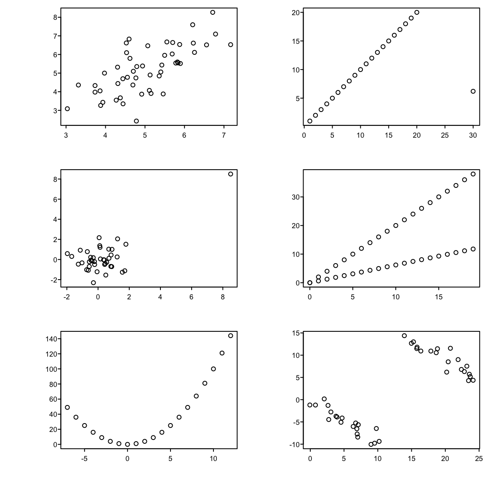
| \(r\) | \(\rho\) | |
|---|---|---|
| all data | 0.90 | 0.73 |
| avg pH \(\leq 4\) | 0.51 | 0.58 |
| avg pH \(> 4\) | 0.74 | 0.65 |
See Chapter 16 for simple approaches to assessing agreement and analyzing observer variability studies.
But there is controversy about what should be on the \(x\)-axis of the plot. Krouwer Krouwer (2008) concluded that:
require(Hmisc)
getHdata(esopH)
esopH$diff <- with(esopH, orophar - conv)
ggplot(esopH, aes(x=(conv + orophar)/2, y=diff)) +
stat_binhex(aes(fill=Hmisc::cut2(..count.., g=20)),
bins=80) +
stat_smooth() +
geom_hline(yintercept = mean(esopH$diff, na.rm=TRUE) +
c(-1.96, 0, 1.96) * sd(esopH$diff, na.rm=TRUE),
linetype=c(2,1,2), color='brown') +
xlab('Average of Conventional and Oropharyngeal pH') +
ylab('Oropharyngeal Minus Conventional pH') +
guides(fill=guide_legend(title='Frequency'))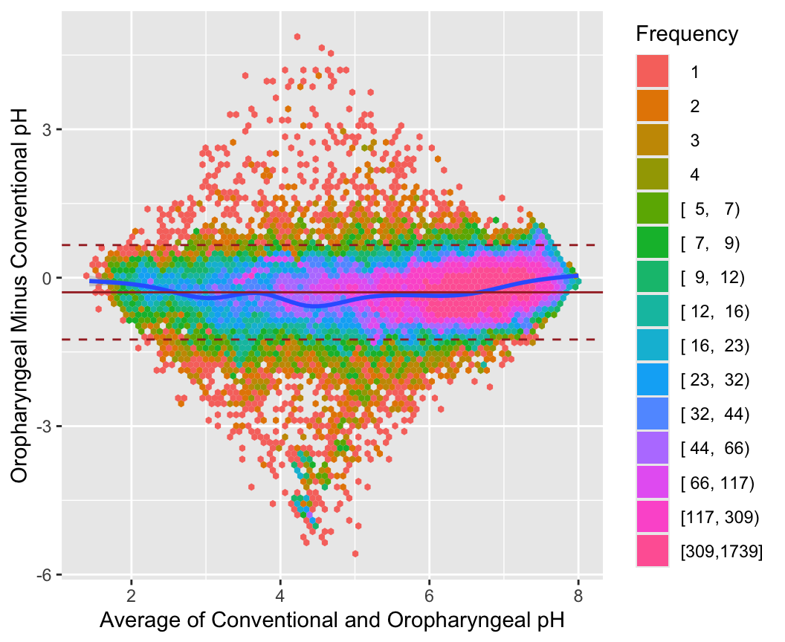
getHdata(esopH2)
ggplot(esopH2, aes(x=time, y=diffpH)) +
geom_point(pch='.') + stat_smooth() +
geom_hline(yintercept = 0, col='gray60') +
scale_x_continuous(breaks=seq(16, 38, by=4),
labels=c("4 PM", "8 PM", "12 AM",
"4 AM", "8AM", "12 PM"),
limits=c(14, 14+24)) +
ylab('Average of Oropharyngeal Minus Conventional pH') +
xlab('Time of Day')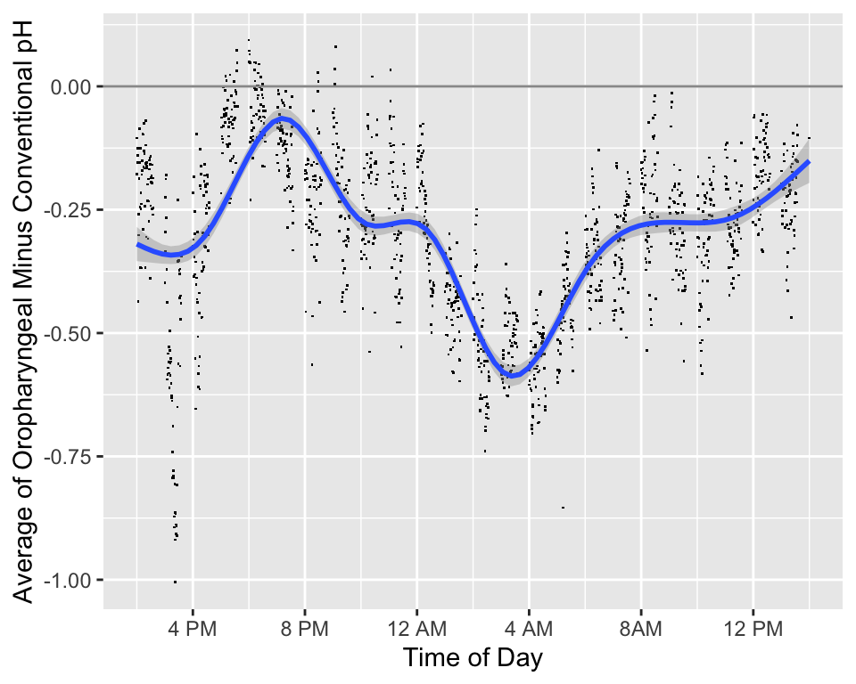
require(Hmisc)
plotCorrPrecision(rho=c(0, .25, .5, .75),
n=seq(10, 1000, length=100),
ylim=c(0, .4), col=1:4, opts=list(keys='lines'))
abline(h=seq(0, .4, by=0.025),
v=seq(25, 975, by=25), col=gray(.9))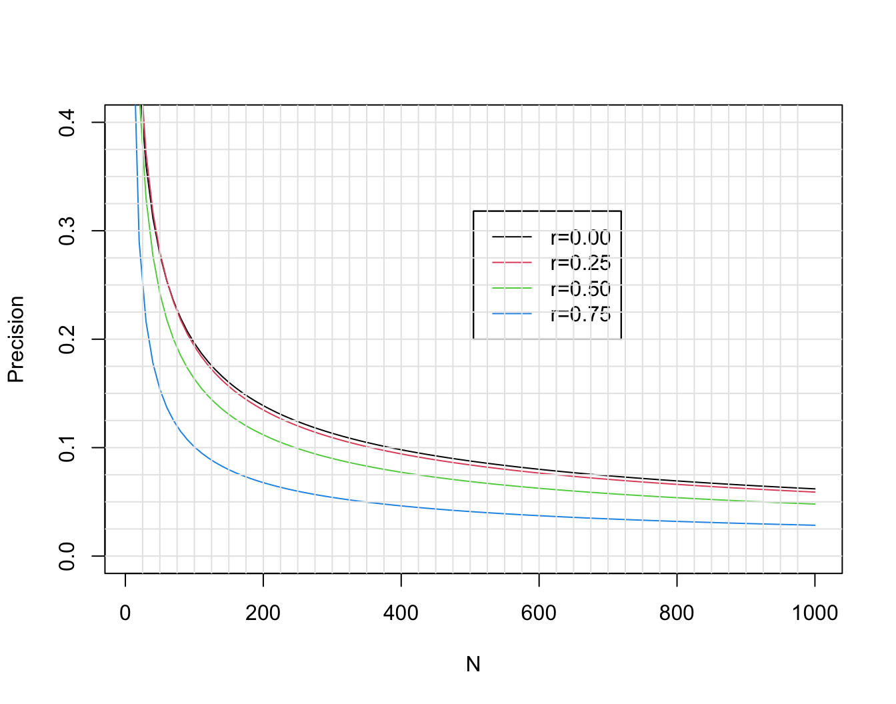
See also stats.stackexchange.com/questions/415131.
Another way to to compute needed sample size is to solve for \(n\) such that the probability that the observed correlation is in the right direction is high. Again using Fisher’s \(z\)-transformation \(z(r) = 0.5 \log{\frac{1 + r}{1 - r}}\), and letting \(r\) and \(\rho\) denote the sample and population correlation coefficients, respectively, \(z(r)\) is approximately normally distributed with mean \(z(\rho)\) and standard deviation \(\frac{1}{\sqrt{n-3}}\). The probability that \(r > 0\) is the same as \(\Pr(z(r) > 0)\), which equals \(\Pr(z(r) - z(\rho) > -z(\rho))\) = \(\Pr(\sqrt{n-3} z(r) - \sqrt{n-3} z(\rho) > -\sqrt{n-3} z(\rho))\) = \(\Phi(\sqrt{n-3}z(\rho))\), where \(\Phi\) is the \(n(0,1)\) cumulative distribution function. If we desired a probability of 0.95 of \(r\) having the right sign, we set the right hand side to 0.95 and solve for \(n\):
\[n = (\frac{\Phi^{-1}(0.95)}{z(\rho)})^{2} + 3\]
When the true correlation \(\rho\) is close to 0.0 it makes sense that the sample size required to be confidence that \(r\) is in the right direction is very large, and the direction will be very easy to determine if \(\rho\) is far from zero. So we are most interested in \(n\) when \(\rho \in [0.1, 0.5]\). The approximate sample sizes required for various \(\rho\) are shown in the graph below.
z <- function(x) 0.5 * log((1 + x) / (1 - x))
rho <- seq(0.1, 0.5, by=0.01)
n <- 3 + (qnorm(0.95) / z(rho)) ^ 2
ggplot(mapping=aes(x=rho, y=n)) + geom_line() +
scale_x_continuous(minor_breaks=seq(0.1, 0.5, by=0.01)) +
scale_y_continuous(minor_breaks=seq(10, 270, by=10)) +
xlab(expression(rho))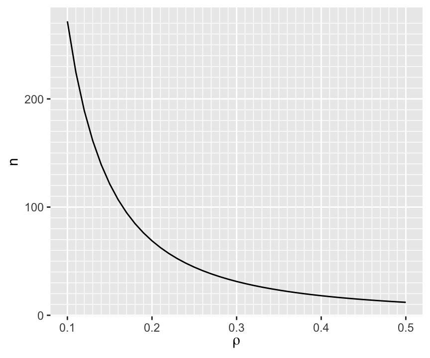
To have at least a 0.95 chance of being in the right direction when the true correlation is 0.1 (or -0.1) requires \(n > 250\).
For a given \(n\) we can compute the probability of being in the right direction for a few values of \(\rho\) as shown below.
d <- expand.grid(n=10:400, rho=c(0.01, 0.05, 0.1, 0.2, 0.3, 0.4, 0.5))
d <- transform(d, p=pnorm(sqrt(n - 3) * z(rho)))
ggplot(d, aes(x=n, y=p, color=factor(rho))) + geom_line() +
scale_x_continuous(minor_breaks=seq(10, 390, by=10)) +
scale_y_continuous(minor_breaks=seq(0.5, 1, by=0.01)) +
ylab('Pr(correct sign on r)') +
guides(color=guide_legend(title=expression(rho)))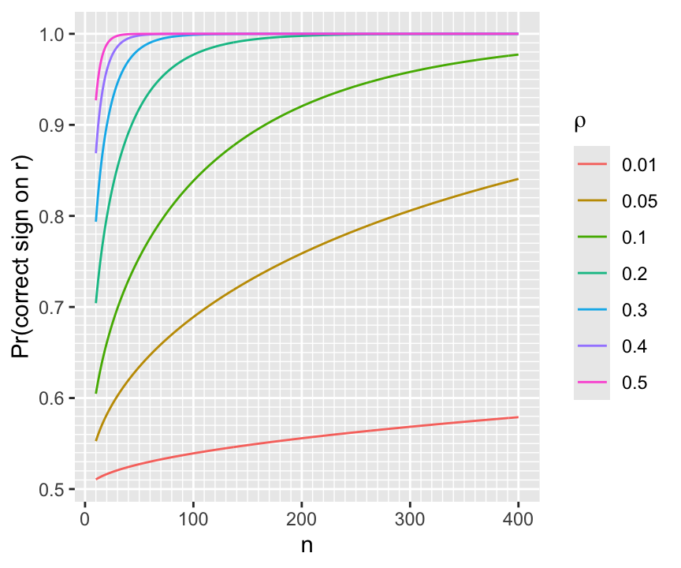
require(Hmisc)
require(mvtnorm)
# Get a population correlation matrix by getting sample correlations
# on a random normal sample with N=20 and all true correlations=0
# then pretend these sample correlations were real population values
set.seed(3)
x <- rmvnorm(20, sigma=diag(10))
R <- rcorr(x)$r
# True correlations we will simulate from:
round(R, 2) [,1] [,2] [,3] [,4] [,5] [,6] [,7] [,8] [,9] [,10]
[1,] 1.00 0.01 0.47 -0.09 -0.31 -0.07 0.14 0.05 0.02 -0.49
[2,] 0.01 1.00 0.48 0.27 0.27 0.14 0.40 -0.17 -0.59 0.60
[3,] 0.47 0.48 1.00 -0.11 0.26 -0.31 0.45 -0.12 -0.50 -0.06
[4,] -0.09 0.27 -0.11 1.00 0.42 0.42 -0.07 -0.35 0.16 0.35
[5,] -0.31 0.27 0.26 0.42 1.00 -0.04 0.03 -0.40 -0.25 0.34
[6,] -0.07 0.14 -0.31 0.42 -0.04 1.00 0.19 -0.36 0.08 0.40
[7,] 0.14 0.40 0.45 -0.07 0.03 0.19 1.00 -0.37 -0.65 -0.07
[8,] 0.05 -0.17 -0.12 -0.35 -0.40 -0.36 -0.37 1.00 0.17 -0.24
[9,] 0.02 -0.59 -0.50 0.16 -0.25 0.08 -0.65 0.17 1.00 -0.18
[10,] -0.49 0.60 -0.06 0.35 0.34 0.40 -0.07 -0.24 -0.18 1.00# Get a huge sample from a multivariate normal distribution to see
# that it mimics the real correlation matrix R
x <- rmvnorm(50000, sigma=R)
table(round(R - rcorr(x)$r, 2))
-0.01 0 0.01
14 76 10 # Now sample from the population to get our dataset with N=50
x <- rmvnorm(50, sigma=R)
rorig <- rcorr(x)$r
round(rorig, 2) [,1] [,2] [,3] [,4] [,5] [,6] [,7] [,8] [,9] [,10]
[1,] 1.00 -0.01 0.50 0.11 0.00 -0.16 0.07 -0.04 -0.04 -0.43
[2,] -0.01 1.00 0.50 0.19 0.43 0.13 0.60 -0.26 -0.76 0.69
[3,] 0.50 0.50 1.00 -0.15 0.45 -0.41 0.52 -0.18 -0.58 -0.01
[4,] 0.11 0.19 -0.15 1.00 0.45 0.30 -0.13 -0.35 0.09 0.14
[5,] 0.00 0.43 0.45 0.45 1.00 -0.12 0.27 -0.53 -0.42 0.20
[6,] -0.16 0.13 -0.41 0.30 -0.12 1.00 0.06 -0.27 0.00 0.51
[7,] 0.07 0.60 0.52 -0.13 0.27 0.06 1.00 -0.57 -0.81 0.19
[8,] -0.04 -0.26 -0.18 -0.35 -0.53 -0.27 -0.57 1.00 0.37 -0.13
[9,] -0.04 -0.76 -0.58 0.09 -0.42 0.00 -0.81 0.37 1.00 -0.41
[10,] -0.43 0.69 -0.01 0.14 0.20 0.51 0.19 -0.13 -0.41 1.00r <- (0 : 3) / 4
n <- 50
zcrit <- qnorm(0.975)
z <- 0.5 * log( (1 + r) / (1 - r))
lo <- z - zcrit/sqrt(n-3)
hi <- z + zcrit/sqrt(n-3)
rlo <- (exp(2*lo)-1)/(exp(2*lo)+1)
rhi <- (exp(2*hi)-1)/(exp(2*hi)+1)
w <- rbind(r=r, 'Margin of Error'=pmax(rhi - r, r - rlo))
prmatrix(round(w, 2), collab=rep('', 4))
r 0.00 0.25 0.50 0.75
Margin of Error 0.28 0.28 0.24 0.15# Function to retrieve the upper triangle of a symmetric matrix
# ignoring the diagonal terms
up <- function(z) z[upper.tri(z)]
rorigu <- up(rorig)
max(rorigu) # .685 = [2,10] element; 0.604 in population[1] 0.6854261which.max(rorigu)[1] 38# is the 38th element in the upper triangle
# Tabulate the difference between sample r estimates and true values
Ru <- up(R)
mean(abs(Ru - rorigu))[1] 0.1149512table(round(Ru - rorigu, 1))
-0.3 -0.2 -0.1 0 0.1 0.2
2 6 7 7 17 6 # Repeat the "finding max r" procedure for 1000 bootstrap samples
# Sample from x 1000 times with replacement, each time computing
# a new correlation matrix
samepair <- dropsum <- 0
for(i in 1 : 1000) {
b <- sample(1 : 50, replace=TRUE)
xb <- x[b, ] # sample with replacement from rows
r <- rcorr(xb)$r
ru <- up(r)
wmax <- which.max(ru)
if(wmax == 38) samepair <- samepair + 1
# Compute correlation for the bootstrap best pair in the original sample
origr <- rorigu[wmax]
# Compute drop-off in best r
dropoff <- ru[wmax] - origr
dropsum <- dropsum + dropoff
}
cat('Number of bootstaps selecting the original most correlated pair:',
samepair, 'out of 1000', '\n')Number of bootstaps selecting the original most correlated pair: 642 out of 1000 cat('Mean dropoff for max r:', round(dropsum / 1000, 3), '\n')Mean dropoff for max r: 0.071 # For each observed correlation compute its rank among 45 distinct pairs
orig.ranks <- rank(up(rorig))
# Sample from x 1000 times with replacement, each time computing
# a new correlation matrix
Rm <- matrix(NA, nrow=1000, ncol=45)
for(i in 1 : 1000) {
b <- sample(1 : 50, replace=TRUE)
xb <- x[b, ]
r <- rcorr(xb)$r
Rm[i, ] <- rank(up(r))
}
# Over bootstrap correlations compute quantiles of ranks
low <- apply(Rm, 2, quantile, probs=0.025)
high <- apply(Rm, 2, quantile, probs=0.975)
round(cbind('Original Rank'=orig.ranks, Lower=low, Upper=high)) Original Rank Lower Upper
[1,] 22 12 34
[2,] 40 32 45
[3,] 41 30 45
[4,] 28 15 37
[5,] 31 20 38
[6,] 15 8 28
[7,] 24 11 34
[8,] 37 32 43
[9,] 38 32 43
[10,] 39 31 44
[11,] 14 8 27
[12,] 29 15 37
[13,] 9 3 15
[14,] 35 22 43
[15,] 18 10 26
[16,] 26 16 34
[17,] 44 38 45
[18,] 43 34 45
[19,] 16 9 27
[20,] 34 25 38
[21,] 25 14 34
[22,] 19 11 32
[23,] 12 7 21
[24,] 13 7 27
[25,] 10 4 20
[26,] 5 3 10
[27,] 11 5 22
[28,] 4 3 8
[29,] 20 10 33
[30,] 2 1 4
[31,] 3 2 11
[32,] 27 16 36
[33,] 7 4 13
[34,] 23 13 32
[35,] 1 1 2
[36,] 36 28 43
[37,] 6 3 15
[38,] 45 40 45
[39,] 21 12 31
[40,] 30 17 37
[41,] 33 21 39
[42,] 42 34 44
[43,] 32 20 38
[44,] 17 11 28
[45,] 8 3 16ranks <- integer(1000)
for(i in 1 : 1000) {
xs <- rmvnorm(50, sigma=R)
rsim <- up(rcorr(xs)$r)
ranks[i] <- rank(rsim)[38]
}
table(ranks) # freqs. of ranks of 38th element in new samplesranks
34 35 36 37 38 39 40 41 42 43 44 45
2 1 6 8 10 18 25 38 58 88 152 594 quantile(ranks, c(0.025, 0.975)) 2.5% 97.5%
38 45 set.seed(8)
n <- 50
p <- 1000
x <- matrix(rnorm(n * p), ncol=p)
Ey <- x[,1] + 2 * x[,2] + 3 * x[,3] + 4 * x[,4] + 5 * x[,5] + 6 * x[,6] +
7 * x[,7] + 8 * x[,8] + 9 * x[,9] + 10 * x[,10]
y <- Ey + rnorm(n) * 20
ro <- cor(x, y)
# First 10 correlations and tabulate all others
round(ro[1:10], 2) [1] 0.26 -0.16 0.05 0.29 -0.03 0.04 0.28 0.05 0.28 0.57table(round(ro[-(1:10)], 1))
-0.5 -0.4 -0.3 -0.2 -0.1 0 0.1 0.2 0.3 0.4 0.5
1 6 43 97 234 250 210 120 25 3 1 # Find which of the 1000 correlation against Y is largest
wmax <- which.max(ro)
wmax # correct according to population[1] 10ro[wmax] # original rank=1000[1] 0.5698995# Simulate 1000 repeats of sample with new y but keeping x the same
# See how original highest correlating variable ranks among 1000
# correlations in new samples
ranks <- numeric(1000)
for(i in 1 : 1000) {
ys <- Ey + rnorm(n) * 20
rs <- cor(x, ys)
ranks[i] <- rank(rs)[wmax]
}
table(round(ranks, -1)) # round to nearest 10
350 400 580 600 610 620 630 660 670 680 690 700 710 720 730 740
1 1 1 1 1 2 1 1 4 2 2 2 1 2 1 1
760 770 780 790 800 810 820 830 840 850 860 870 880 890 900 910
1 1 2 4 6 2 6 11 3 6 6 9 13 8 15 15
920 930 940 950 960 970 980 990 1000
15 34 39 41 50 66 126 203 294 quantile(ranks, c(0.025, 0.975)) 2.5% 97.5%
770.85 1000.00 sum(ranks > 998)[1] 139RMS 2.4.7 ABD 17.8 🅓
| \(X\): | 1 | 2 | 3 | 5 | 8 |
|---|---|---|---|---|---|
| \(Y\): | 2.1 | 3.8 | 5.7 | 11.1 | 17.2 |
\[\begin{array}{ccc} \hat{E}(Y | X=2) &=& \frac{2.1+3.8+5.7}{3} \\ \hat{E}(Y | X=\frac{2+3+5}{3}) &=& \frac{3.8+5.7+11.1}{3} \end{array}\]
require(Hmisc)
require(data.table)
getHdata(abm) # Loads data frame ABM (note case)
# Convert to a data table and add derived variables
setDT(ABM)
ABM[, glratio := gl / bloodgl]
ABM[, tpolys := polys * whites / 100]
r <- ABM[, {
plsmo(tpolys, glratio, xlab='Total Polymorphs in CSF',
ylab='CSF/Blood Glucose Ratio',
xlim=quantile(tpolys, c(.05,.95), na.rm=TRUE),
ylim=quantile(glratio, c(.05,.95), na.rm=TRUE))
scat1d(tpolys); scat1d(glratio, side=4) } ]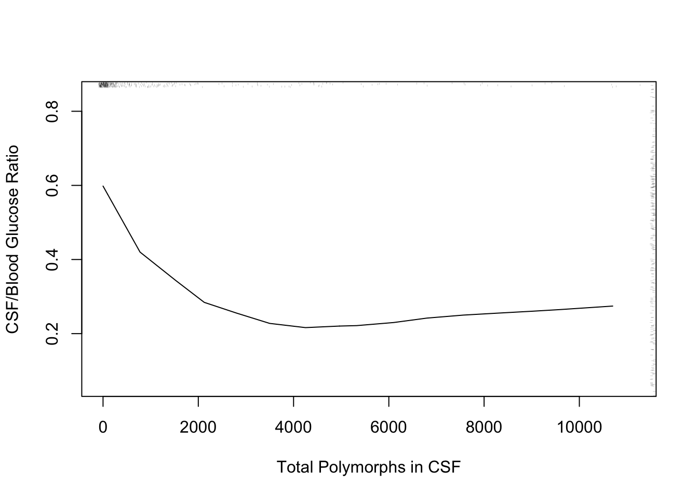
The following example using “super smoother” of Friedman (1984) in place of loess to estimate a complex relationship that has a sharp turn.
r <- ABM[, {
plsmo(age, abm, 'supsmu', bass=7,
xlab='Age at Admission, Years',
ylab='Proportion Bacterial Meningitis')
scat1d(age) } ]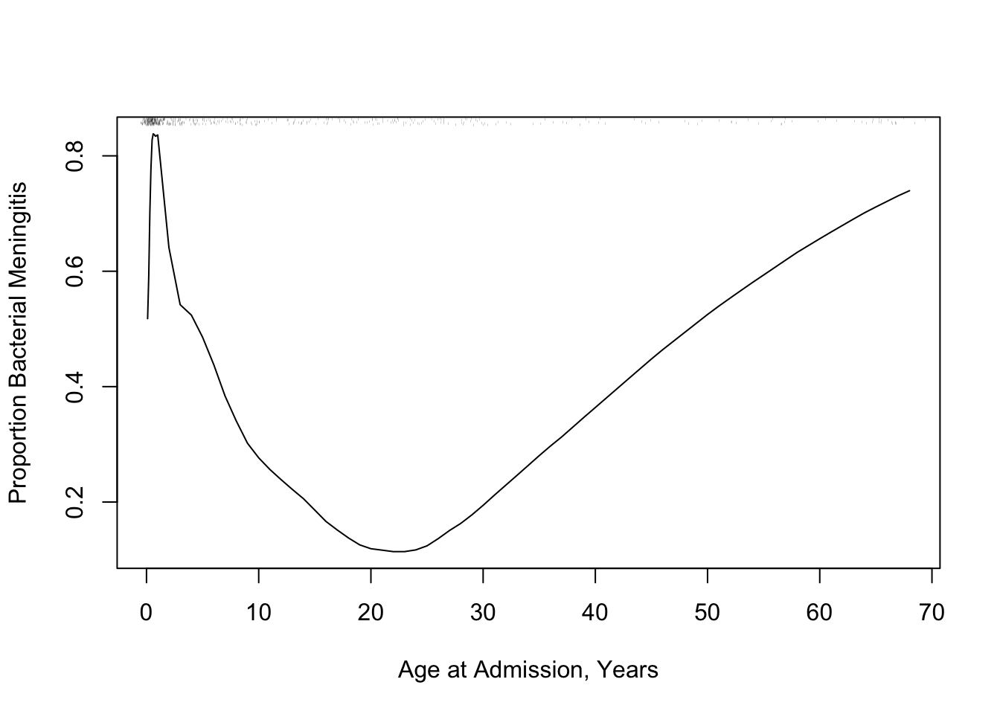
R function movStats in the Hmisc packageu <- movStats(glratio ~ tpolys, data=ABM, pr='margin')| N | Mean | Min | Max | xinc |
|---|---|---|---|---|
| 283 | 30.8 | 25 | 31 | 1 |
ggplot(u, aes(x=tpolys, y=`Moving Median`)) + geom_line() +
geom_ribbon(aes(ymin=`Moving Q1`, ymax=`Moving Q3`), alpha=0.2) +
geom_line(aes(x=tpolys, y=`Moving Mean`, col=I('blue'))) +
xlab('Total Polymorphs in CSF') +
ylab('CSF/Blood Glucose Ratio') + ylim(0, 1)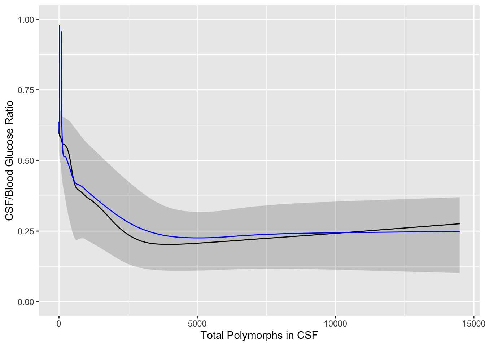
require(qreport) # provides addggLayers
u <- movStats(abm ~ age, msmooth='both', data=ABM, melt=TRUE, pr='margin')| N | Mean | Min | Max | xinc |
|---|---|---|---|---|
| 420 | 30.9 | 25 | 31 | 2 |
g <- ggplot(u, aes(x=age, y=abm)) + geom_line(aes(col=Type)) +
xlab('Age at Admission, years') +
ylab('Proportion Bacterial Meningitis')
g <- addggLayers(g, ABM, value='age', type='spike')
addggLayers(g, ABM, value='age', type='ebp', pos='top')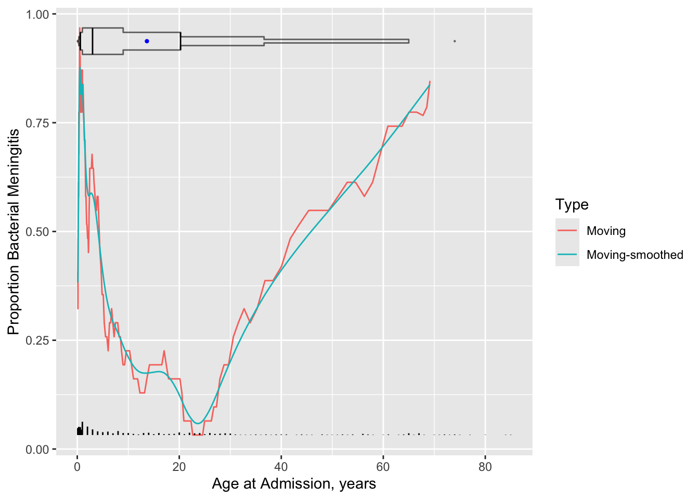
getHdata(valung)
require(survival) # for Surv()
u <- movStats(Surv(t / (365.25 / 12), dead) ~ age, times=c(6, 12),
eps=25, data=valung, melt=TRUE, pr='margin', tunits='month')| N | Mean | Min | Max | xinc |
|---|---|---|---|---|
| 137 | 48.7 | 35 | 51 | 1 |
g <- ggplot(u, aes(x=age, y=incidence)) + geom_line(aes(col=Statistic)) +
guides(color=guide_legend(title='')) + ylab('Mortality')
addggLayers(g, valung, value='age', type='spike')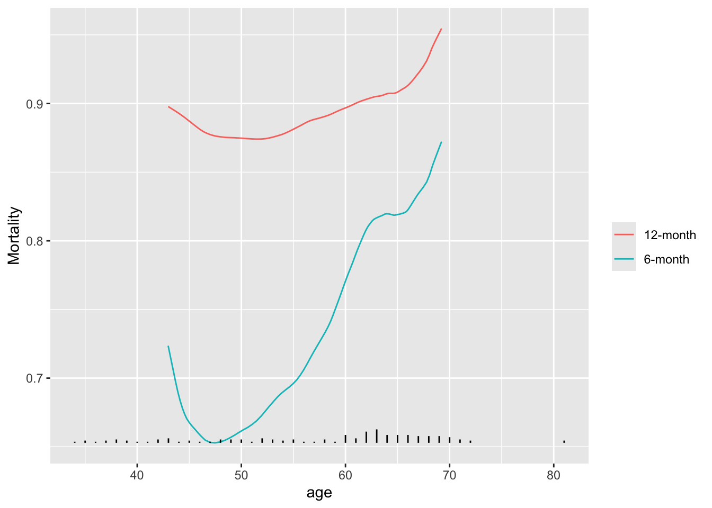